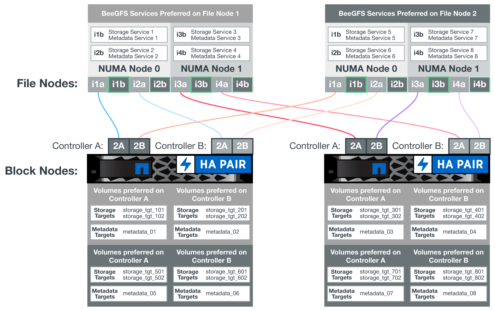

문서 변경 요청
문서 변경 요청 이 페이지 편집
이 페이지 편집 기여하는 방법 자세히 알아보기
기여하는 방법 자세히 알아보기소프트웨어 구성
NetApp 기반 BeeGFS에 대한 소프트웨어 구성에는 BeeGFS 네트워크 구성 요소, EF600 블록 노드, BeeGFS 파일 노드, 리소스 그룹, BeeGFS 서비스가 포함됩니다.
BeeGFS 네트워크 구성
BeeGFS 네트워크 구성은 다음과 같은 구성 요소로 이루어집니다.
-
* 부동 IP * 부동 IP는 동일한 네트워크의 모든 서버로 동적으로 라우팅될 수 있는 일종의 가상 IP 주소입니다. 여러 서버가 동일한 부동 IP 주소를 소유할 수 있지만, 특정 시간에 한 서버에서만 활성화될 수 있습니다.
각 BeeGFS 서버 서비스에는 BeeGFS 서버 서비스의 실행 위치에 따라 파일 노드 간에 이동할 수 있는 고유한 IP 주소가 있습니다. 이러한 부동 IP 구성을 통해 각 서비스가 다른 파일 노드로 독립적으로 페일오버할 수 있습니다. 클라이언트는 특정 BeeGFS 서비스의 IP 주소를 알고 있으면 됩니다. 이 경우 현재 해당 서비스를 실행 중인 파일 노드를 알 필요가 없습니다.
-
* BeeGFS 서버 다중 홈 구성 * 솔루션의 밀도를 높이기 위해 각 파일 노드에는 동일한 IP 서브넷에 구성된 IP를 가진 여러 스토리지 인터페이스가 있습니다.
기본적으로 하나의 인터페이스에 대한 요청은 동일한 서브넷에 있는 경우 다른 인터페이스에서 응답할 수 있기 때문에 Linux 네트워킹 스택에서 이 구성이 예상대로 작동하는지 확인하기 위해 추가 구성이 필요합니다. 다른 단점 외에도 이 기본 동작으로 인해 RDMA 연결을 적절하게 설정하거나 유지할 수 없습니다.
Ansible 기반 배포에서는 부동 IP가 시작 및 중지되는 시기와 함께 RP(역방향 경로) 및 ARP(주소 해상도 프로토콜) 동작 조임을 처리하고, 다중 홈 네트워크 구성이 제대로 작동하도록 해당 IP 경로 및 규칙을 동적으로 생성합니다.
-
* BeeGFS 클라이언트 다중 레일 구성 * _Multi-RAIL_은 애플리케이션이 여러 개의 독립적인 네트워크 "레일"을 사용하여 성능을 향상시키는 기능을 의미합니다.
BeeGFS는 RDMA 연결을 위해 RDMA를 사용할 수 있지만, BeeGFS는 IPoIB를 사용하여 RDMA 연결 검색 및 설정을 간소화합니다. BeeGFS 클라이언트가 여러 InfiniBand 인터페이스를 사용할 수 있도록 하려면 각 클라이언트를 다른 서브넷에 있는 IP 주소로 구성한 다음 각 서브넷에 있는 BeeGFS 서버 서비스의 절반에 대해 기본 인터페이스를 구성할 수 있습니다.
다음 다이어그램에서는 밝은 녹색으로 강조 표시된 인터페이스가 하나의 IP 서브넷(예: 100.127.0.0/16)에 있고 어두운 녹색 인터페이스는 다른 서브넷(예: 100.128.0.0/16)에 있습니다.
다음 그림에서는 여러 BeeGFS 클라이언트 인터페이스에서 트래픽의 균형을 조정하는 방법을 보여 줍니다.

BeeGFS의 각 파일은 일반적으로 여러 스토리지 서비스에 걸쳐 스트라이핑되기 때문에 다중 레일 구성을 통해 클라이언트는 단일 InfiniBand 포트보다 더 많은 처리량을 달성할 수 있습니다. 예를 들어, 다음 코드 샘플은 클라이언트가 두 인터페이스 간에 트래픽의 균형을 조정할 수 있도록 하는 일반적인 파일 스트라이핑 구성을 보여 줍니다.
root@ictad21h01:/mnt/beegfs# beegfs-ctl --getentryinfo myfile Entry type: file EntryID: 11D-624759A9-65 Metadata node: meta_01_tgt_0101 [ID: 101] Stripe pattern details: + Type: RAID0 + Chunksize: 1M + Number of storage targets: desired: 4; actual: 4 + Storage targets: + 101 @ stor_01_tgt_0101 [ID: 101] + 102 @ stor_01_tgt_0101 [ID: 101] + 201 @ stor_02_tgt_0201 [ID: 201] + 202 @ stor_02_tgt_0201 [ID: 201]
두 개의 IPoIB 서브넷을 사용하는 것은 논리적인 구분입니다. 필요한 경우 단일 물리적 InfiniBand 서브넷(스토리지 네트워크)을 사용할 수 있습니다.

단일 IPoIB 서브넷에서 여러 IB 인터페이스를 사용할 수 있도록 BeeGFS 7.3.0에 멀티 레일 지원이 추가되었습니다. BeeGFS 7.3.0을 GA 전에 NetApp 기반 BeeGFS 솔루션의 설계가 개발되었으며, BeeGFS 클라이언트에서 두 개의 IB 인터페이스를 사용하는 두 개의 IP 서브넷을 보여 줍니다. 다중 IP 서브넷 접근 방식의 한 가지 장점은 BeeGFS 클라이언트 노드에서 멀티호밍을 구성할 필요가 없기 때문입니다(자세한 내용은 참조) "BeeGFS RDMA 지원")를 클릭합니다.
EF600 블록 노드 구성
블록 노드는 동일한 드라이브 세트에 대한 공유 액세스를 가진 2개의 액티브/액티브 RAID 컨트롤러로 구성됩니다. 일반적으로 각 컨트롤러는 시스템에 구성된 볼륨의 절반을 소유하지만 필요에 따라 다른 컨트롤러를 인수할 수 있습니다.
파일 노드의 다중 경로 소프트웨어는 각 볼륨에 대한 최적화된 활성 경로를 결정하고 케이블, 어댑터 또는 컨트롤러에 장애가 발생할 경우 대체 경로로 자동으로 이동합니다.
다음 다이어그램은 EF600 블록 노드의 컨트롤러 레이아웃을 보여 줍니다.

공유 디스크 HA 솔루션을 지원하기 위해 볼륨은 두 파일 노드에 매핑되므로 필요에 따라 서로 테이크오버할 수 있습니다. 다음 다이어그램은 BeeGFS 서비스 및 기본 볼륨 소유권이 최대 성능을 위해 구성되는 방법의 예를 보여 줍니다. 각 BeeGFS 서비스 왼쪽에 있는 인터페이스는 클라이언트 및 기타 서비스가 연락하는 데 사용하는 기본 인터페이스를 나타냅니다.

앞의 예에서 클라이언트 및 서버 서비스는 인터페이스 i1b를 사용하여 스토리지 서비스 1과 통신하는 것을 선호합니다. 스토리지 서비스 1은 인터페이스 i1a를 기본 경로로 사용하여 첫 번째 블록 노드의 컨트롤러 A에 있는 해당 볼륨(storage_tgt_101, 102)과 통신합니다. 이 구성은 InfiniBand 어댑터에서 사용할 수 있는 양방향 PCIe 대역폭을 완벽하게 사용하고 PCIe 4.0에서 사용할 수 있는 것보다 듀얼 포트 HDR InfiniBand 어댑터에서 더 나은 성능을 제공합니다.
BeeGFS 파일 노드 구성
BeeGFS 파일 노드는 HA(High-Availability) 클러스터로 구성되어 여러 파일 노드 간에 BeeGFS 서비스의 페일오버를 지원합니다.
HA 클러스터 설계는 널리 사용되는 두 가지 Linux HA 프로젝트, 즉 클러스터 멤버십을 위한 Corosync 및 클러스터 리소스 관리를 위한 Pacemaker를 기반으로 합니다. 자세한 내용은 을 참조하십시오 "고가용성 애드온을 위한 Red Hat 교육".
NetApp은 클러스터가 지능적으로 BeeGFS 리소스를 시작하고 모니터링할 수 있도록 여러 OCF(Open Cluster Framework) 리소스 에이전트를 저술하고 확장했습니다.
BeeGFS HA 클러스터
일반적으로, HA를 사용하거나 사용하지 않고 BeeGFS 서비스를 시작할 때 다음과 같은 몇 가지 리소스를 사용해야 합니다.
-
서비스에 연결할 수 있는 IP 주소이며 일반적으로 Network Manager에서 구성합니다.
-
BeeGFS에서 데이터를 저장하기 위한 타겟으로 사용되는 기본 파일 시스템입니다.
일반적으로 이러한 항목은 '/etc/fstab’에 정의되어 있으며 systemd에 의해 마운트됩니다.
-
다른 리소스가 준비되면 BeeGFS 프로세스를 시작하는 시스템 서비스입니다.
추가 소프트웨어가 없으면 이러한 리소스는 단일 파일 노드에서만 시작됩니다. 따라서 파일 노드가 오프라인이 되면 BeeGFS 파일 시스템의 일부를 액세스할 수 없습니다.
여러 노드에서 각 BeeGFS 서비스를 시작할 수 있으므로, Pacemaker는 각 서비스와 종속 리소스가 한 번에 하나의 노드에서만 실행되도록 해야 합니다. 예를 들어, 두 노드가 동일한 BeeGFS 서비스를 시작하려고 하면 둘 다 기본 타겟의 동일한 파일에 쓰려고 하면 데이터 손상이 발생할 위험이 있습니다. 이러한 시나리오를 피하기 위해, 페이스 메이커의 Corosync를 사용하여 전체 클러스터의 상태를 모든 노드에 걸쳐 안정적으로 유지하고 쿼럼을 설정합니다.
클러스터에서 장애가 발생하면 심장박동기가 반응하여 다른 노드에서 BeeGFS 리소스를 다시 시작합니다. 일부 시나리오에서는 심박조율기가 장애가 발생한 원래 노드와 통신하지 못하여 리소스가 중지되었는지 확인할 수 없습니다. 다른 곳에서 BeeGFS 리소스를 다시 시작하기 전에 노드가 다운되었는지 확인하려면 심장박동기가 장애가 있는 노드를 분리합니다. 즉, 전원을 제거하는 것이 좋습니다.
심박조율기가 PDU(Power Distribution Unit)를 사용하여 노드를 펜싱하거나 서버 BMC(Baseboard Management Controller)를 Redfish와 같은 API와 함께 사용하여 오픈 소스 펜싱 에이전트를 많이 사용할 수 있습니다.
BeeGFS가 HA 클러스터에서 실행 중인 경우 모든 BeeGFS 서비스 및 기본 리소스는 리소스 그룹의 페이스 메이커를 통해 관리됩니다. 각 BeeGFS 서비스 및 해당 서비스가 의존하는 리소스가 리소스 그룹으로 구성되어 리소스가 올바른 순서로 시작 및 중지되어 동일한 노드에 배치됩니다.
각 BeeGFS 리소스 그룹에 대해 심장박동기는 특정 노드에서 BeeGFS 서비스에 더 이상 액세스할 수 없을 때 장애 조건을 감지하고 페일오버를 지능적으로 트리거하는 사용자 지정 BeeGFS 모니터링 리소스를 실행합니다.
다음 그림에서는 심장박동기 제어 BeeGFS 서비스 및 종속성을 보여 줍니다.

|
|
동일한 유형의 여러 BeeGFS 서비스를 동일한 노드에서 시작할 수 있도록 다중 모드 구성 방법을 사용하여 BeeGFS 서비스를 시작하도록 페이스 메이커를 구성합니다. 자세한 내용은 를 참조하십시오 "멀티 모드에 대한 BeeGFS 문서". |
BeeGFS 서비스는 여러 노드에서 시작할 수 있어야 하므로 각 서비스의 구성 파일('/etc/beegfs’에 있음)은 해당 서비스의 BeeGFS 타겟으로 사용되는 E-Series 볼륨 중 하나에 저장됩니다. 따라서 특정 BeeGFS 서비스에 대한 데이터와 함께 서비스를 실행해야 하는 모든 노드에서 해당 구성을 액세스할 수 있습니다.
# tree stor_01_tgt_0101/ -L 2
stor_01_tgt_0101/
├── data
│ ├── benchmark
│ ├── buddymir
│ ├── chunks
│ ├── format.conf
│ ├── lock.pid
│ ├── nodeID
│ ├── nodeNumID
│ ├── originalNodeID
│ ├── targetID
│ └── targetNumID
└── storage_config
├── beegfs-storage.conf
├── connInterfacesFile.conf
└── connNetFilterFile.conf